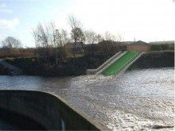

All the latest from our friends at Sheffield Renewables (www.sheffieldrenewables.org.uk ) including updates from Jordan Dam, Kelham Island and Powerstation Sheffield.
- Jordan Dam - We are really pleased to announce that the Jordan Dam planning application was GRANTED on May 18th. A few of us had a small celebration at The Blake the following Saturday. A big thank you to the 8 media outlets/organisations that publicised our news. Further (and hopefully final) survey work has been completed by ECUS. We are currently in the process of recruiting a Construction Project Manager and we hope to complete the Abstraction Licence application in June. Things are really moving on now with this scheme.
- Kelham Island - The Kelham Island planning application has been put on hold while we review visual design and fisheries issues. We don't think these will be big hurdles, and are hoping for planning permission in the autumn. We are hoping to have another work day/weekend over the summer to remove some of the vegetation and mud near the weir, so if you like getting wet and muddy, please get in touch with Jean.
- Funding - We have recently been awarded funding towards our core costs from ERDF Access Fund (£5,000) and Co-op Hubs (£25,000). An Outline Business Plan has been submitted for our European Regional Development Fund bid and we are currently agreeing revisions with Yorkshire Forward. We have submitted a major bid to CO2Sense that would also contribute to capital costs for Jordan Dam.
- Powerstation Sheffield - We were successful with our bid to Artist Project Earth, so Matt Hilton will now be working part-time on this. Once developed there will be three interactive apps (programs) for our website. You will be able to share information on, and find out more about, local energy schemes. There will also be a renewable energy Trumps card game to help Sheffield retain its title as home to the national Top Trumps champion. Find out more from Matt at Peace in the Park and Green Fair (see below) and keep an eye out for the launch of the web apps in September.
- Management Support - Mark Wells is currently being paid to do some much needed Management Support on a temporary basis to give Rob more time to concentrate on Jordan Dam.
- Share Offer - As many of you know, we organised a tour of the hydro sites and talk on the share offer for potential investors on May 7th. Twenty four attended and we think it was a very successful day. We are now planning the launch of our Early Bird Share Offer on Saturday, September 3rd.
For more information and other news please visit www.sheffieldrenewables.org.uk
Other things
We now have our new booklets and posters, so if you know a good location to put them, please contact Cariad.
If you or anyone you know has expertise in noise transmission, or wind speed prediction/modelling in urban hilly areas, Cariad would really love to hear from you.
Events
- Saturday, June 4th Come along and see us at Peace in the Park on the Ponderosa.
- Tuesday, June 7th Volunteer social for those who want to get more involved. Contact Cariad.
- Saturday, June 25th We will be at the Green Fair at St Mary's, Brammall Lane.
- Wednesday, June 29th Talk for potential investors in city centre, 7.30 pm. Contact Jean.
- Tuesday, July 5th Volunteer social for those who want to get more involved. Contact Cariad.
Contacts
Office: South Yorkshire Energy Centre, 25 Alexandra Road, Sheffield, S2 3EE. 0114 250 8367 (Tues & Weds)
Cariad: cariad@sheffieldrenewables.org.uk
Jean: jean@sheffieldrenewables.org.uk